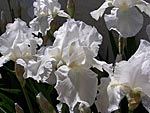

The Iris
This week's featured flower is the white iris. This flower is white. It's an iris. You can trust me to tell the truth about that.
It grows in the ground. It blooms in the spring. It's known as a spring bulb. It grows from a bulb and the bulbs multiply and if you aren't careful you'll have a whole field full of iris after a few years, because these bulbs are busy being prolific down there in the dark.
Don't forget to cut some and take them inside because they smell really nice and they don't make you sneeze all that much.
More Information
If you add an H to the end of this flower it spells Irish. You can take advantage of this fact for dad jokes around St. Patrick's Day by saying stuff like "Kiss me, I'm Iris!" or singing the song "When Iris Eyes are Smiling"
Iris Flower Varieties
